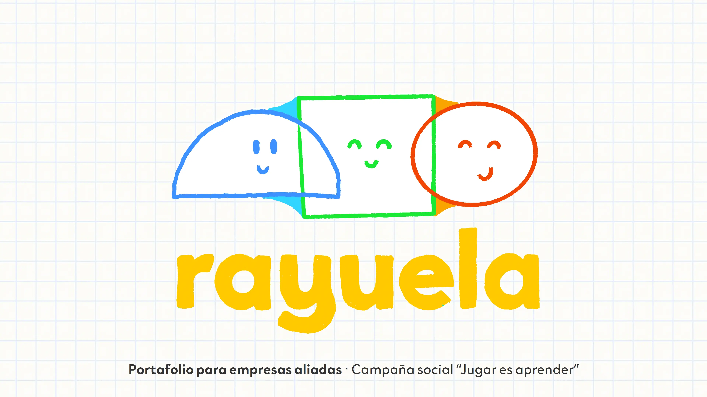
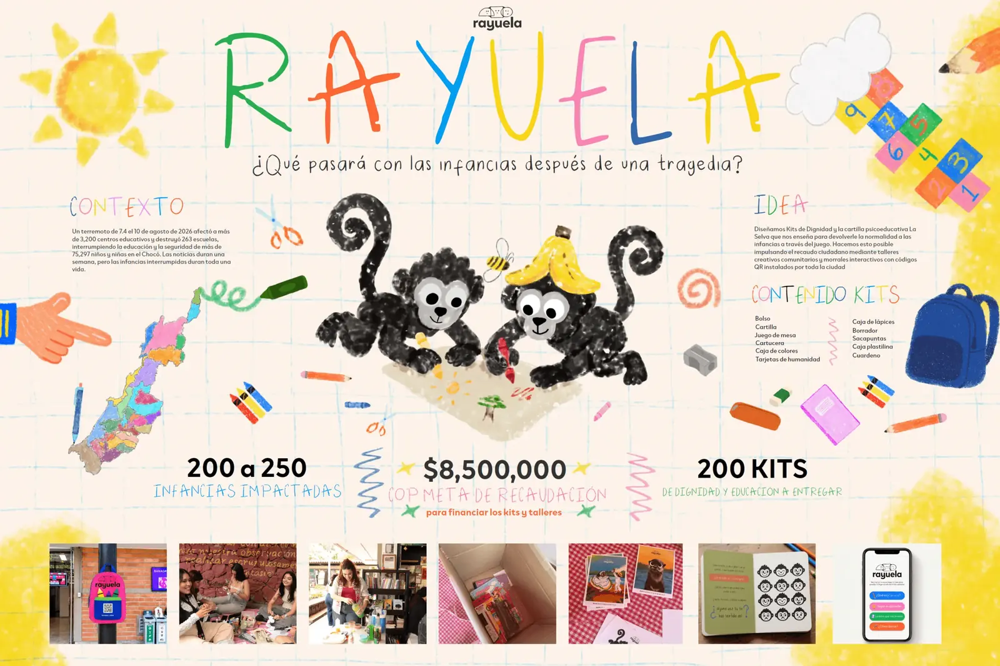
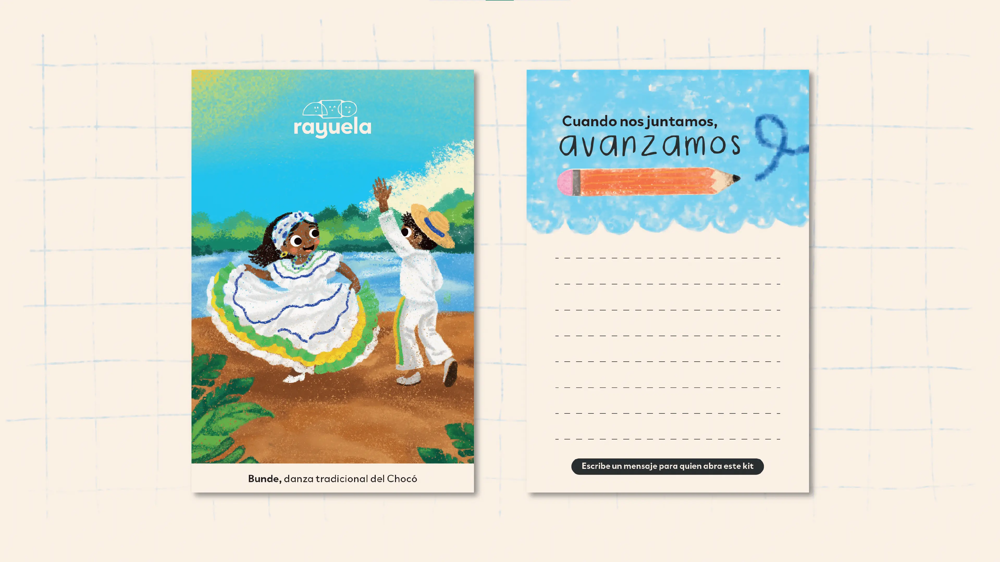
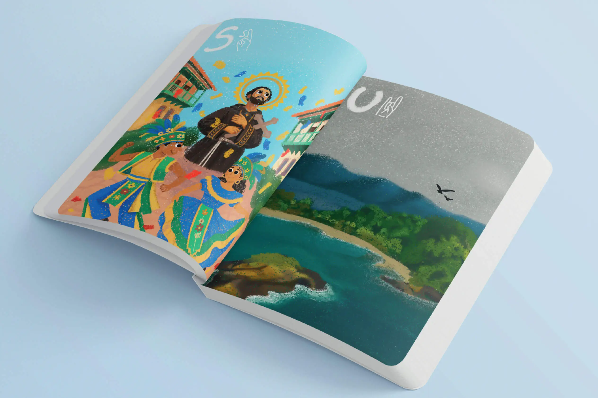
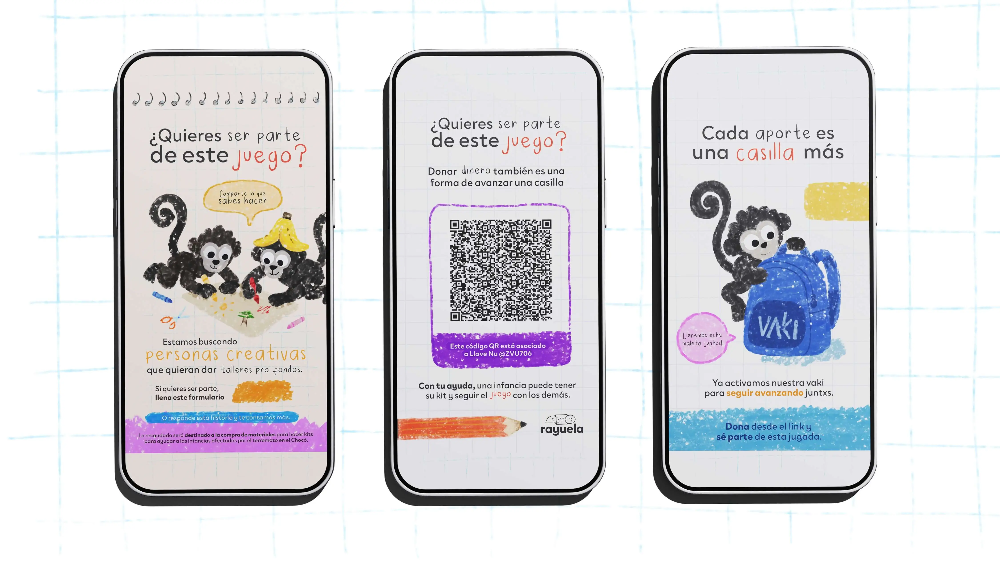
Asignatura
Taller gráfico VIII
Docente
Ana Catalina Quirós
Iniciativa de estudiantes de Comunicación Gráfica ante el sismo en Chocó para recuperar espacios de aprendizaje afectados. La campaña social busca gestionar 200 kits educativos para niños de 6 a 9 años en Tadó, protegiendo la rutina, el juego y la niñez. Reconstruir también es recuperar oportunidades para vivir con dignidad.
Conoce másIntegrantes del proyecto
-
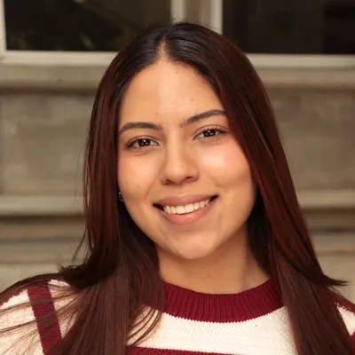
Camila Alejandra
Chacon Torres -
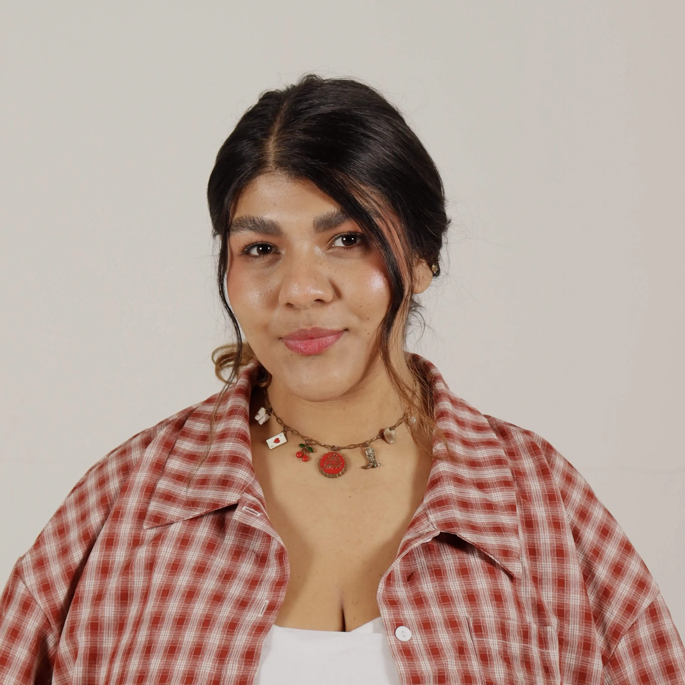
Simona Grisales
Llano -
 Manuela Alzate
Manuela Alzate
Bernal -
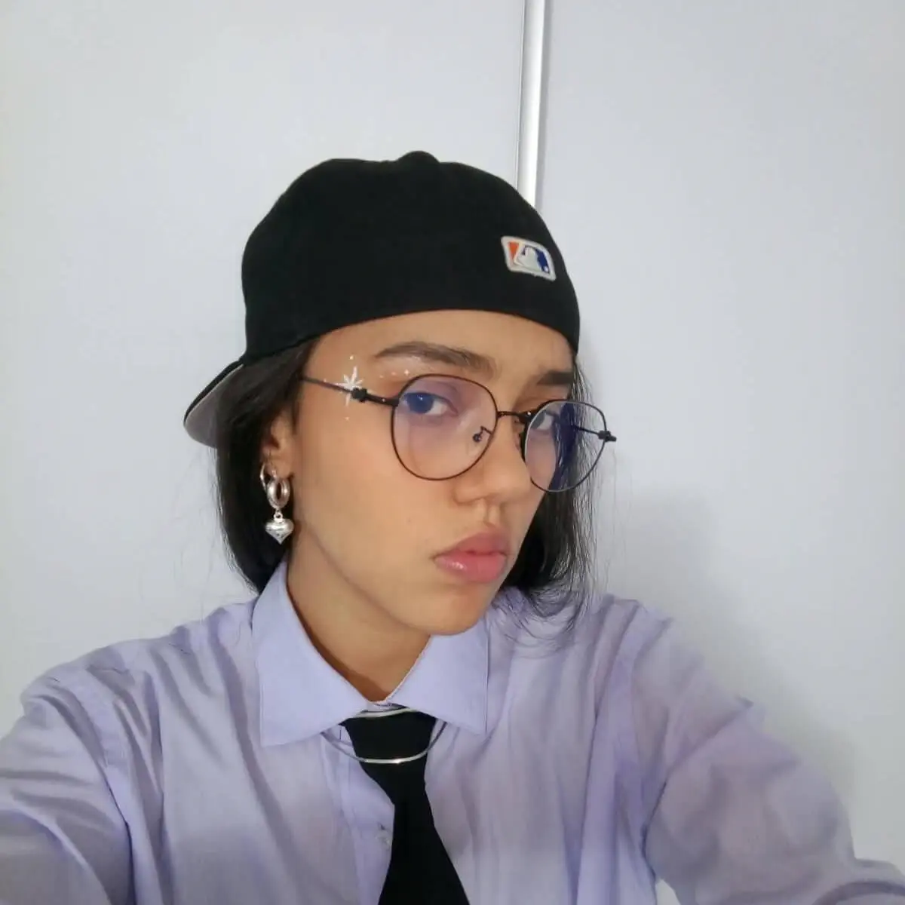
Sofia Gutierrez
Hernandez -
Daniela Lopez
Rojas -
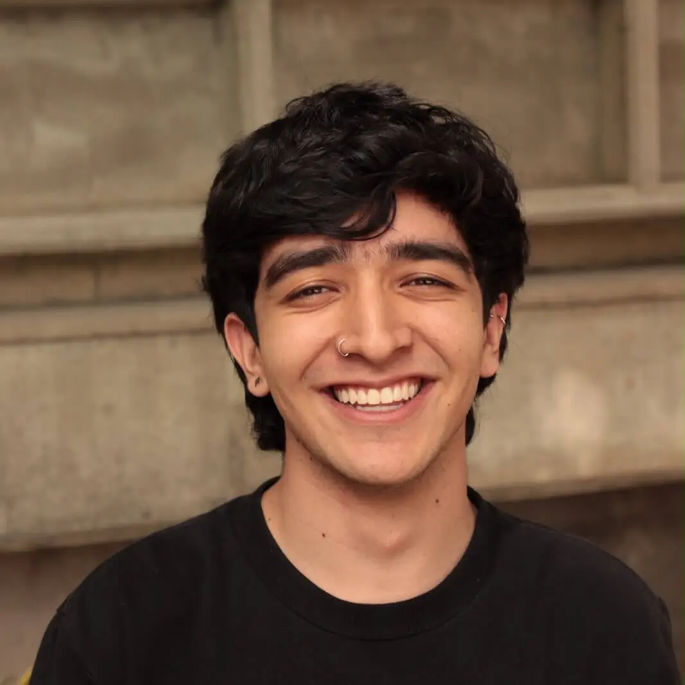
Juan Esteban
Martinez Giraldo -
Juan David
Mena Rivas -
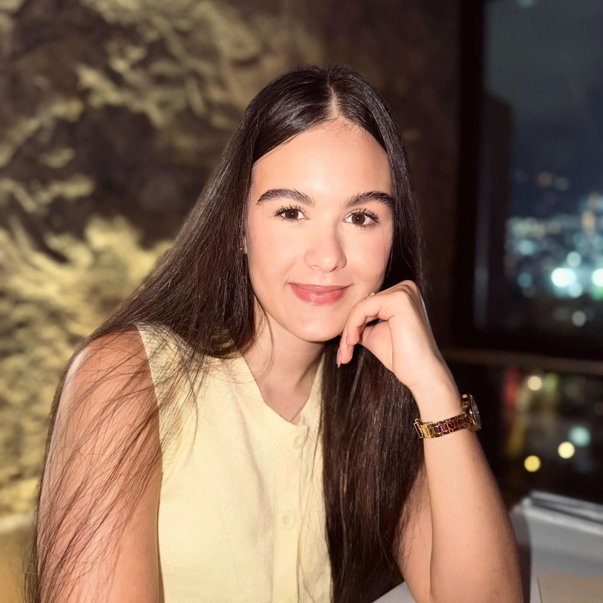
Hilary Soto
Betancur -
Lorena Toro
Ramirez -
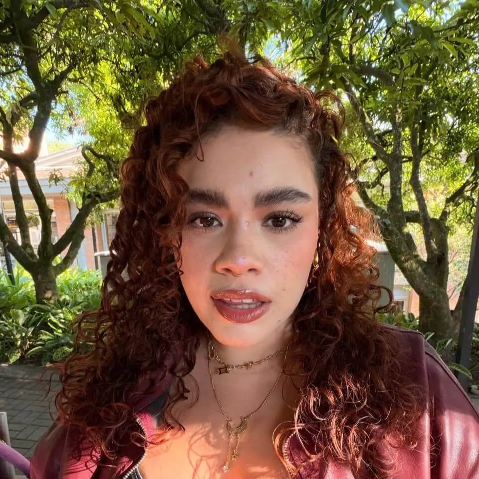
Maria Camila
Torres Bolivar -
Sofia Zuluaga
Penagos -
Sussan Alvarez
Navarro -
Juan Felipe
Alzate Cardona -
Ana Maria
Arenas Hoyos -
Maria Jose
Aristizabal Jaramillo -
Isabella Carvajal
Guzman -
Isabella Chaves
Henao -
Carlos Alejandro
Corzo Santos -
Cristian Santiago
Galeano Quiceno -
Ana Sofia
Gallego Gomez -
Isaac Gallego
Mesa -
Maria Jose
Gonzalez Alvarez -
Alejandra Gonzalez
Osorio -
Tomas Herrera
Henao -
Sara Isaza
Agudelo -
Michell Lopez
Galvis -
Valentina Marin
Usuga -
Maria Fernanda
Martin Donoso -
Paula Andrea
Mazo Osorio -
Manuela Quiroga
Llanos -
Laura Camila
Velasquez Cardenas